Diagramação de 1 tópico por página A4 (sem cortes ou quebras incorretas).
O Preciza CRM & Gestão Agronômica é uma plataforma desenvolvida sob medida para centralizar e profissionalizar todas as etapas do atendimento ao produtor rural: desde o primeiro contato comercial e cálculo automatizado de orçamentos técnicos até o acompanhamento do maquinário no campo, remessa de laudos laboratoriais e quitação financeira.
1 alq = 2,42 ha) em tempo real, sem arredondamentos errados.Como usar este guia:
Cada uma das páginas seguintes apresenta uma tela ou modal do sistema, acompanhada da imagem real correspondente e das orientações práticas de preenchimento para sua equipe.
O sistema é 100% web e pode ser acessado de qualquer computador, tablet ou celular conectado à internet, sem necessidade de instalar aplicativos pesados.
https://statistical-institutes-wood-somehow.trycloudflare.com (ou rede local: http://192.168.1.20:3000).Tela de Acesso e Login — Preciza FarmFlow
Assim que o login é efetuado, você tem acesso imediato à radiografia operacional da empresa em tempo real:
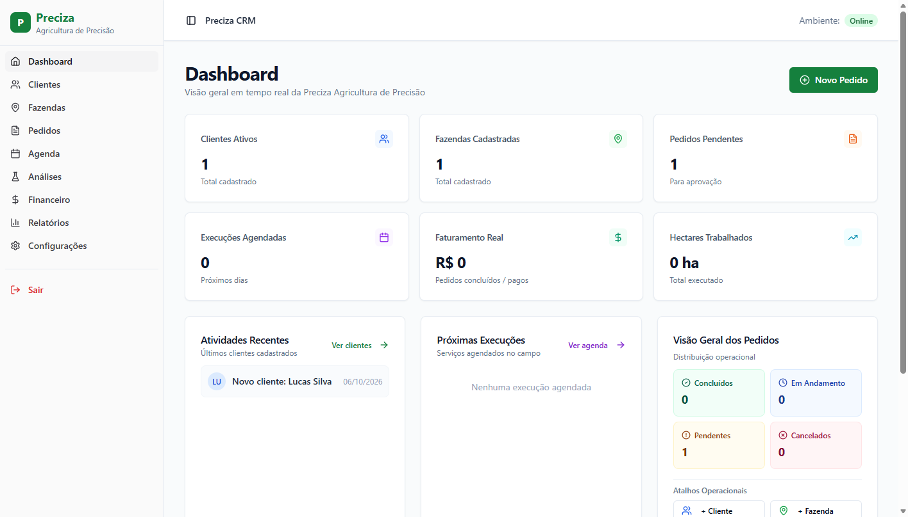
Painel Principal e Indicadores Operacionais em Tempo Real
No menu lateral esquerdo, clique em Clientes para acessar toda a carteira de produtores rurais cadastrados:
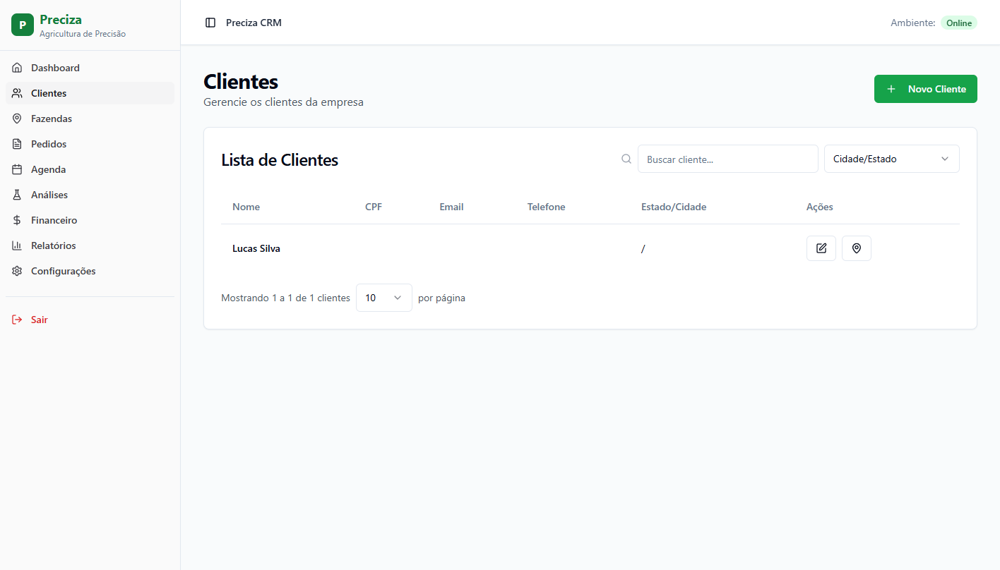
Tabela de Clientes Cadastrados com Pesquisa e Filtros
Ao clicar no botão verde + Novo Cliente no canto superior, abre-se o formulário de cadastro simplificado:
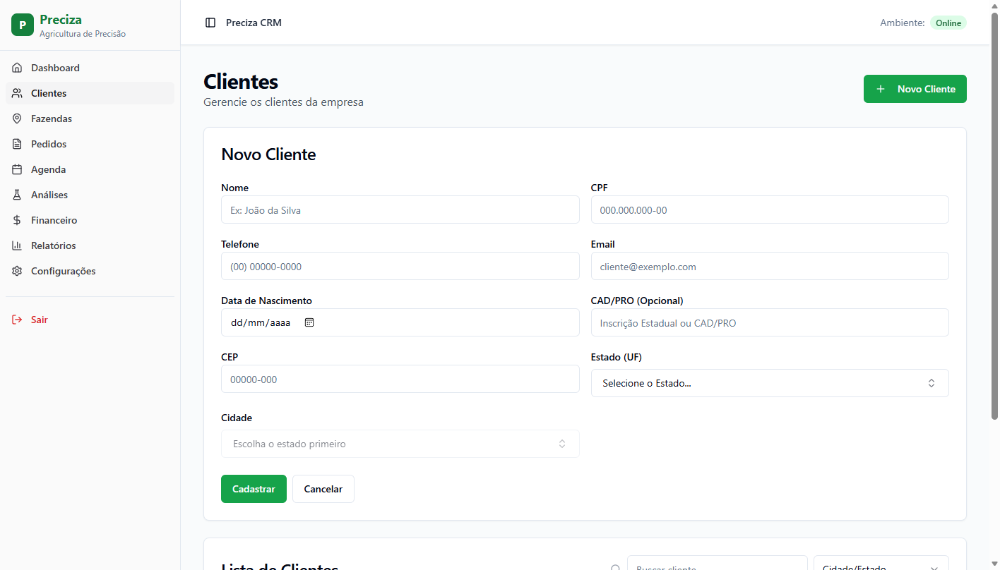
Formulário de Cadastro do Produtor com Validação Inteligente
No menu lateral, a aba Fazendas permite cadastrar e visualizar todas as propriedades rurais atendidas:
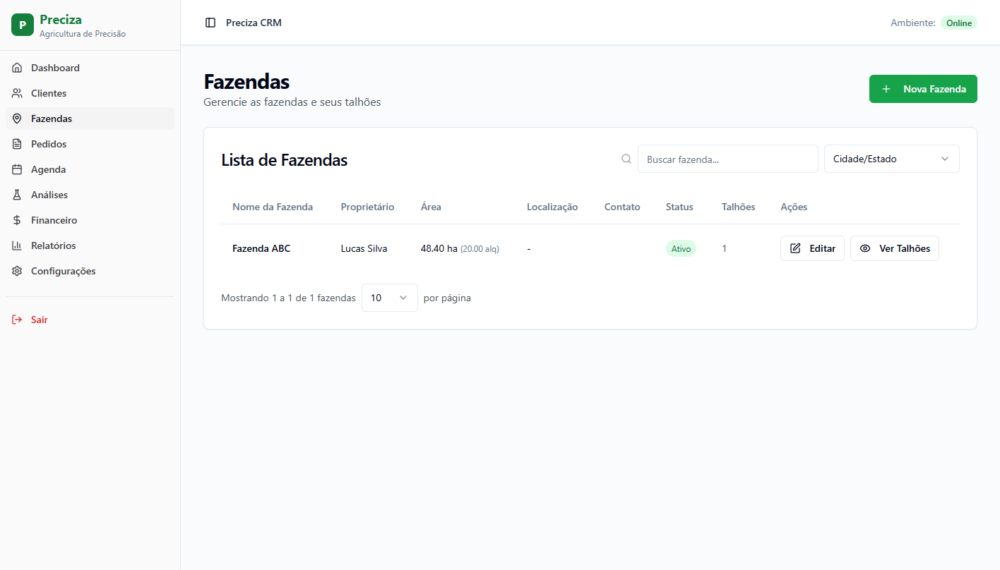
Lista de Fazendas Atendidas com Áreas em Hectares e Alqueires
Ao clicar em + Nova Fazenda, o operador desfruta do recurso exclusivo de Conversão Bidirecional Inteligente:
🔄 Conversão Instantânea e Precisa:
• Digitando em Alqueires (ex: 20 alq): O sistema preenche automaticamente 48.40 ha.
• Digitando em Hectares (ex: 48.40 ha): O sistema converte na hora para 20.00 alq.
Taxa oficial do Alqueire Paulista (1 alq = 2,42 ha) com estrita precisão de 2 casas decimais.
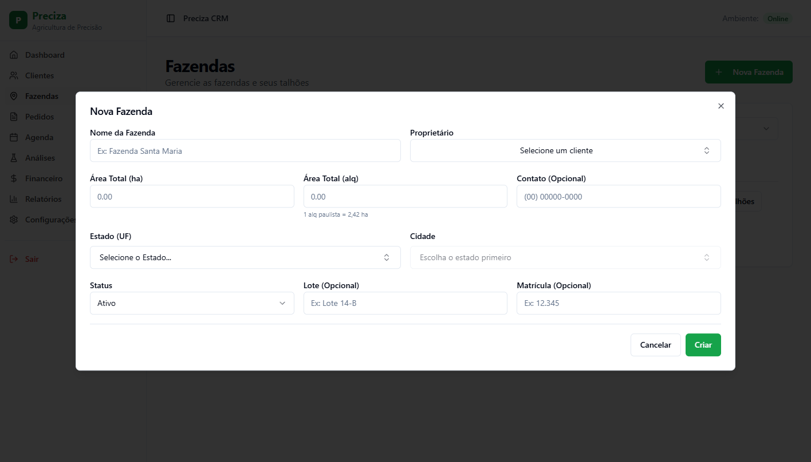
Modal de Nova Fazenda com Recálculo Bidirecional de Área
Ao clicar no ícone de talhões de qualquer fazenda, abre-se o modal de divisão de áreas da propriedade:
48.40 ha (20.00 alq)).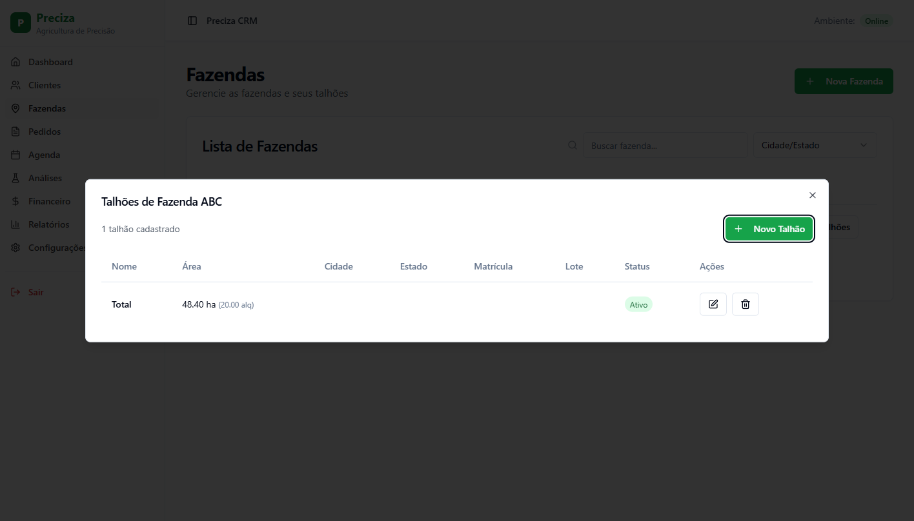
Gerenciamento de Talhões da Fazenda com Áreas Formatadas
A tela de Pedidos é o coração comercial do sistema. Nela ficam registradas todas as propostas, seus status de aprovação, execução e quitação:
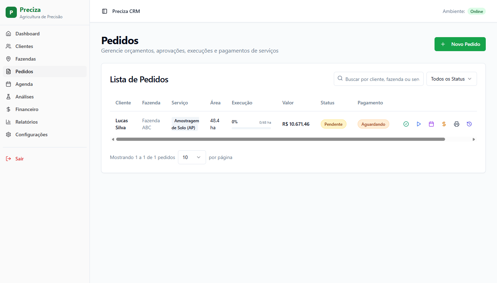
Painel Geral de Pedidos e Propostas Comerciais
Ao clicar em + Novo Pedido e escolher o serviço de Agricultura de Precisão, o sistema carrega o motor agronômico completo:
ha por ponto.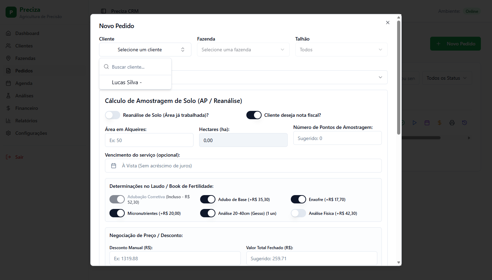
Modal de Orçamento Técnico com Parametrização Agronômica Completa
Ao clicar no ícone de impressora em qualquer pedido, o sistema gera a Folha de Pedido Oficial Timbrada da Preciza:
Pronta para Envio e Assinatura:
• Botão Baixar PDF: Salva o arquivo oficial no seu dispositivo com 1 clique para envio imediato no WhatsApp.
• Via Cliente / Via Empresa: Alterne entre a via comercial externa e a via técnica interna.
• Discriminação Comercial: Tabela com alqueires contratados, preço unitário, totalização e condições de pagamento.
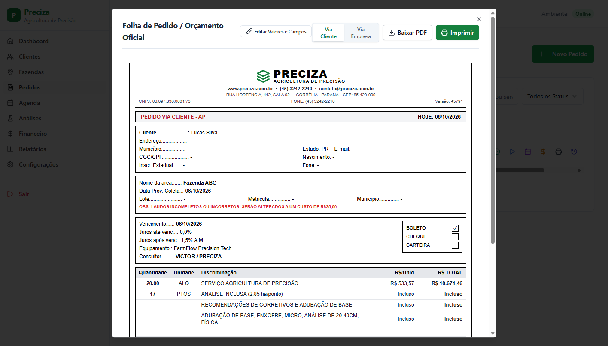
Folha de Pedido Oficial Timbrada para Impressão ou Download em PDF
Na aba Agenda, o coordenador de operações e os técnicos acompanham a fila de execução dos serviços:
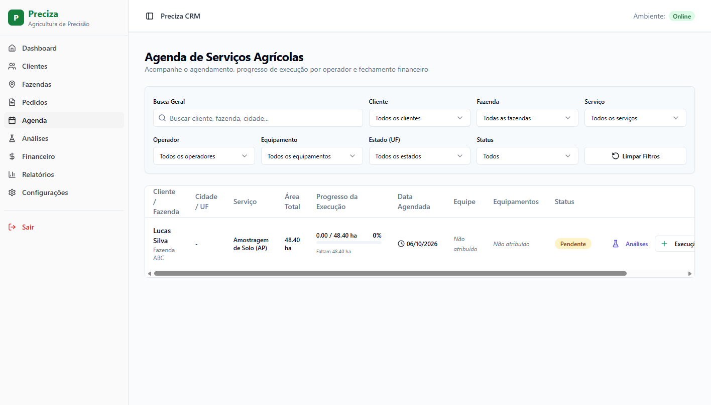
Agenda Operacional com Rastreabilidade de Área e Equipe
Ao clicar no botão de execução na Agenda, abre-se o modal de apontamento do trabalho realizado no dia:
Execução Total ou Parcial Inteligente:
• O sistema já traz calculado o Saldo Restante da área contratada.
• Rateio por Equipe: Permite detalhar quanto cada operador executou com seu respectivo equipamento (ex: 20 ha com Quadriciclo A, 28.40 ha com Trator B).
• Conclusão Segura: O serviço concluído não vai direto para cobrança sem conferência.
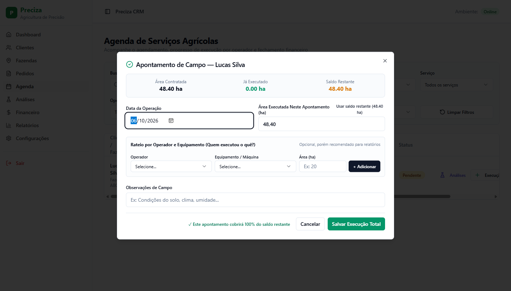
Modal de Registro de Execução com Saldo Restante e Rateio
No menu lateral, o módulo Financeiro centraliza o fluxo de caixa, faturamento e contas a receber:
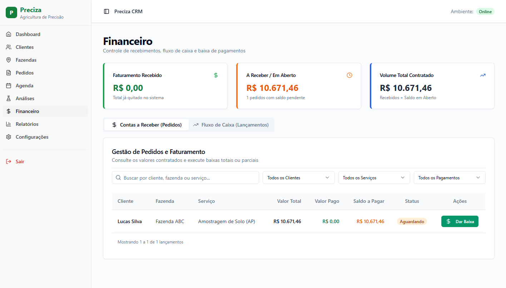
Painel Financeiro com Indicadores de Faturamento e Contas a Receber
Ao clicar no botão verde Dar Baixa no financeiro, o operador abre o modal de quitação simplificado:
Flexibilidade de Pagamento:
• Liquidar Saldo Total: Um clique no atalho verde preenche automaticamente o valor integral restante.
• Baixa Parcial / Entrada: Digite o valor recebido e o sistema calcula instantaneamente o saldo remanescente.
• Formas de Pagamento: Selecione PIX, Boleto, Cheque ou Dinheiro com sincronização imediata no fluxo de caixa.
Modal de Baixa de Pagamento com Suporte a Quitação Parcial ou Total
Na aba Análises, a equipe técnica acompanha as amostras de solo e folhas enviadas aos laboratórios parceiros:
Macro, Macro+S, Física, Foliar).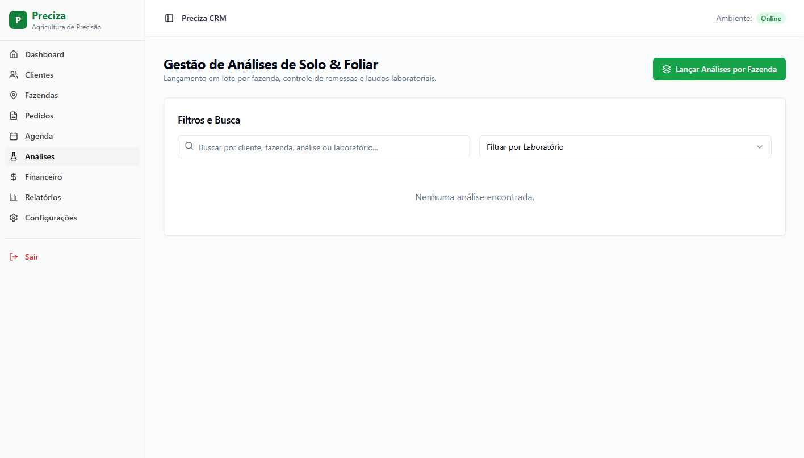
Painel de Controle de Remessas e Laudos Laboratoriais
A aba Configurações permite personalizar com autonomia as tabelas de preços, frotas e colaboradores:
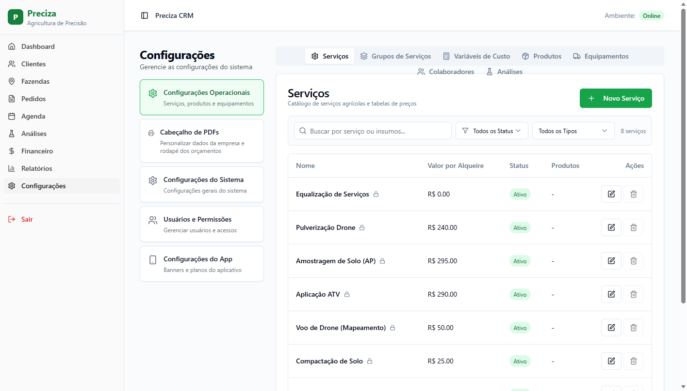
Catálogo Oficial de Serviços Agronômicos e Parâmetros da Empresa